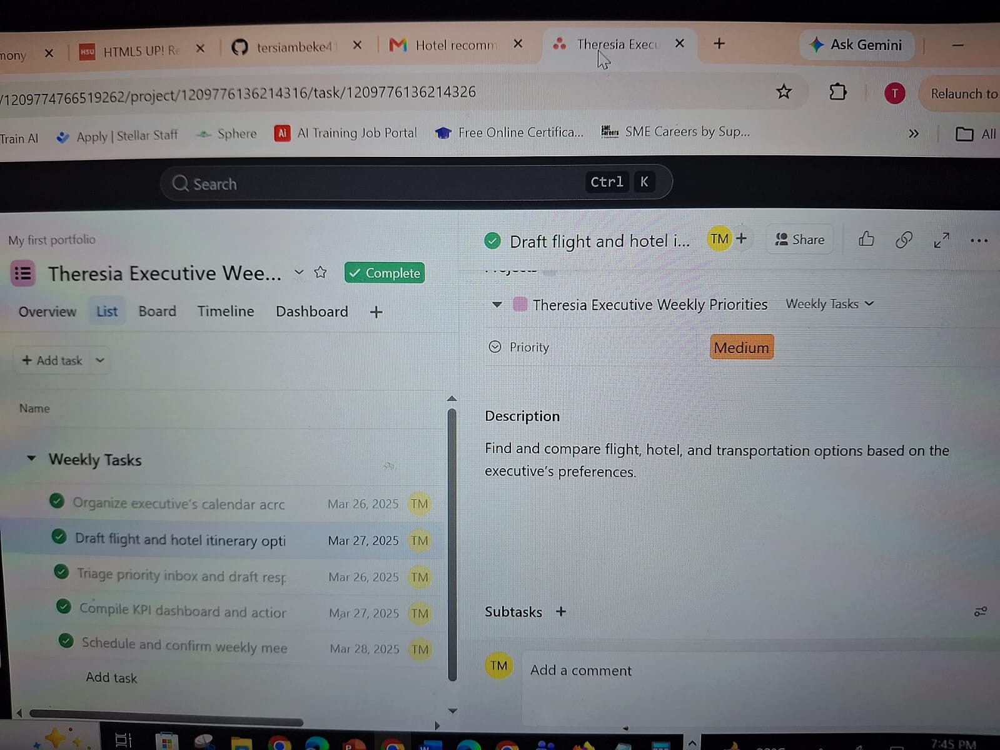

Executive Virtual Assistant & Operations Partner
Proactive Executive Assistant with 3 years of experience supporting global clients to save time, focus, and energy while enhancing operational efficiency. Proven track record of freeing up 10–15 productive hours weekly for executives, maintaining strict confidentiality, and boosting productivity by 20% through workflow automation.

Specialized Administrative & Operations Support built on multi-time-zone coordination, digital organization, and no-code tool integration.
Tools: Google Workspace, Microsoft 365, Slack, Zoom, Trello, Asana, Notion, ClickUp, Zoom, Monday.com, Calendly, Fathom, Zapier, Claude, Canva.
3 Years of Proven Executive Support driving efficiency across remote environments, international time zones, and cross-functional administrative projects.
Visual samples of automated workflows, system setups, and administrative tracking frameworks.
Detailed breakdown of executive roles, administrative responsibilities, and operational achievements.
Remote | September 2023 – August 2026
Remote | February 2023 – August 2023
Ready to reclaim 10–15 hours of your week? Whether you need high-level inbox triage, multi-time-zone calendar management, or custom Make.com workflow automations, I am here to help handle your administrative operations.
{kind=link}
{kind=link}
{kind=link}
{kind=link}